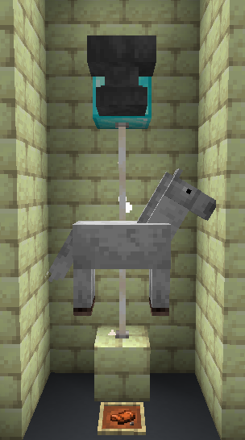
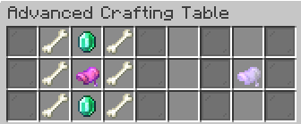
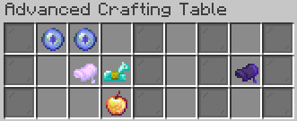
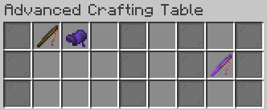

Learn how to install Horsetastic
To install horsetastic, you have to download the zip file and then navigate to your .minecraft folder. If you don't know how to find it, you can find the location on your operating system here.
Enter the saves folder and open the folder with the name of your world. If you are playing in minecraft java 1.14+ (datapacks don't exist in bedrock edition) there should be a folder named datapacks. Put the .zip file inside that folder.
Requires Custom Loot and unnamed core.
Everything about the Gem of the Undead
Gets dropped from skeletons and zombies. Used to craft Skeleton horse in a saddle.
Everything about the Eye of Blinky
Gets dropped from skeleton horses. Used to craft Blinky's saddle.
A new way to craft a saddle
Drop five leather and crush them with a piston from above to craft a saddle.
Everything about the Horse in a saddle

Drop to summon a horse. Take of to make the horse dissappear.
Used to craft Skeleton horse in a saddle.
Everything about the Skeleton horse in a saddle

Drop to summon a skeleton horse. Take of to make the skeleton horse dissappear.
Used to craft Blinky's saddle.
Everything about Blinky's saddle
 Drop to summon blinky. Take of the saddle to unsummon blinky.
Everything about Blinky's Whip

You will keep the saddle.
Right click to teleport to nearest Blinky. While riding Blinky, right click to teleport some blocks forward.
if you found any bugs, need help or have some ideas
You can contact me via my discord server.
More contact options